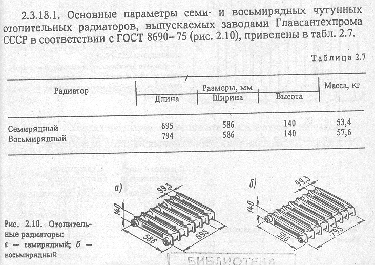
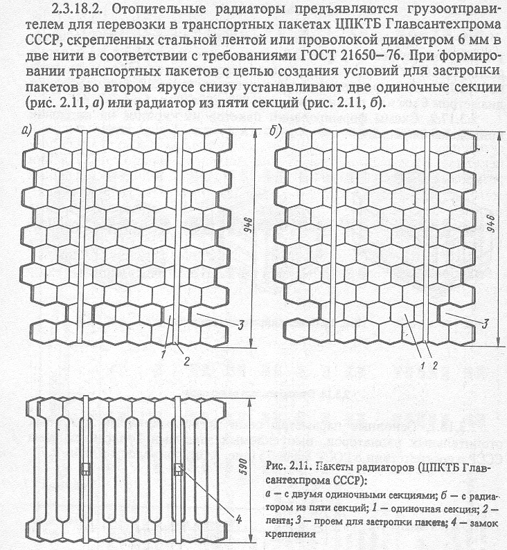

2.3.18.3. Характеристика транспортных пакетов радиаторов
2.3.18.6. Характеристика блок-пакета радиаторов на поддоне размером 1200х1600180 мм,
сформированного из четырех пакетов ЦПКТБ Главсантехпрома
2.3.18.8. Характеристика укрупненного пакета радиаторов, сформированного
на специализированном поддоне